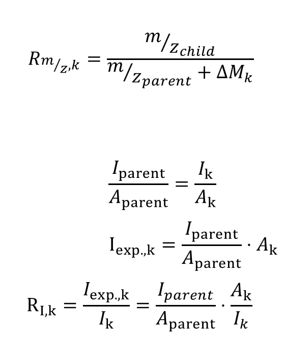
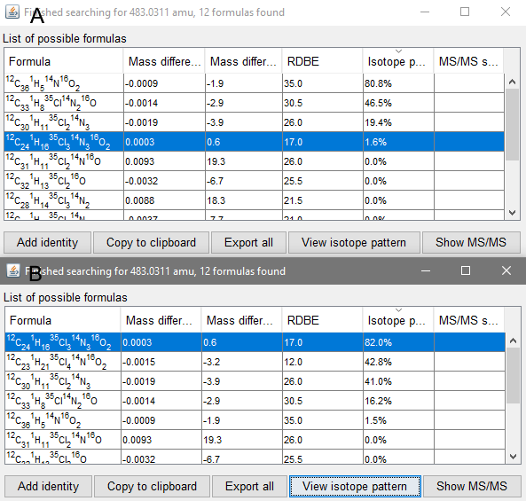

This module can scan acquired MS-Data for a isotope pattern of a specified element combination. The element combination is given as a string parameter (e.g. "Cl3"). The isotope pattern of this element combination will be calculated and compared to you MS-Data. The result is a new peak list containing the isotope features. The features will have an isotope rating, comparing the found features to the calculated isotope pattern giving the user the option to manually evaluate the results. Additionally, the features will also be assigned to an isotope combination. Furthermore, the isotope features will be registered as an isotope pattern in MZmine so modules like Sum formula prediction can use the results to compare them to the calculated isotope pattern of predicted sum formulas.
Peak list - The peak lists that shall be analyzed.
MZ tolerance - m/z window around the expected isotope features to scan for isotope peaks.
Check RT - Whether to filter via retention time or not. This does not make sense for imaging or direct infusion, but is critical for chromatographic data.
RT tolerance - Tolerance range if you want to filter via RT.
Element pattern - Element (combination) whose isotope pattern to be searched for. Please enter the two letter Symbol of the elements. (e.g. \"Gd\", \"Cl2Br\")
Minimum abundance - The minimum abundance (%) of Isotopes. Small values might increase accuracy but will decrease sensitivity if less abundant isotope combinations are not detected. Please note that the calculated isotope pattern will also be filtered via "Min. pattern intensity" parameter removing isotope combinations below a given abundance/intesity.
Min. pattern intensity - The minimum normalized intensity of a peak in the final calculated isotope pattern. Depends on the sensitivity of your MS. This differs from minimum abundance. Min = 0.0, Max = 0.99...
Minimum height - Minimum peak height to be considered as an isotope peak. This is crucial if you use the "Accurate average" parameter. (see below)
Merge width(m/z) - This will be used to merge peaks in the calculated isotope pattern if they overlap in the spectrum. Specify in m/z, this depends on the resolution of your mass spectrometer.
Check intensity - Compare intensity of peaks to the calculated abundance if the isotope pattern. It's recommended to check this parameter for more accurate results. However, when processing fragment data and it's unknown how much of an isotope pattern remains charged it might be reasonable to uncheck this. (e.g.: Fragmenting a Cl8-isotope-pattern-molecule -> If "Element pattern" = Cl4 this module will recognize everything with Cl4 or more Cl.)
Minimun rating - Minimum rating to be considered as an isotope peak. min = 0.0, max = 1.0
Rating type - Method to calculate the rating with. Highest Intensity is the standard method and faster. Average is slower but could be more accurate for more intense peaks. Select a masslist.
Name suffix - Suffix to be added to peak list name. If "auto" then this module will create a suffix.
Charge - Amount (e.g.: [M]+=+1 / [M]-=-1). This is important for multiply charged molecules because the m/z offset between isotope peaks will halve for molecules with a charge of two.
Calculate accurate average - Please select a mass list. This method will use averaged intensities over all mass lists in which ALL relevant masses were detected in. This will only be done for peaks that match the defined rating-calculation with the given rating. Make sure the mass list is contained in the peak list. If there are no Scans that match all criteria avg rating will be -1.0. This will scan all mass lists for the peak closest to the identified isotope peak in the peak list and average the intensity.

R describes the rating. k is the number of an isotope peak. parent describes the isotope peak with the lowest mass. child describes all other isotope peaks. exp. describes the calculated intensitys. If any rating is bigger than 1, for example if m/z_(parent) + ΔM is smaller than m/z_(child), then it will be adjusted by 1/R to be comparable. If intensity shall be checked as well, m/z and intensity rating will be multiplied resulting in the final rating.
This figure shows an example of the result peak list produced by Isotope peak scanner. It features the detected isotope peaks, an detected m/z ppm-offset, expected (@monoisotopic mass) and detected intensity ratios, the isotope composition, the rating, and if specified, the average rating.

This figure shows the results of the sum formula prediction for the compound Pigment Red 112. Using just the integrated 13C isotope pattern recognition the correct sum formula has and isotope pattern score of 1.6 % (A) for the correct sum formula. Using Isotope peak scanner and recognizing the Cl3 and C isotope pattern the score for the correct sum formula is 82.0 % (B).